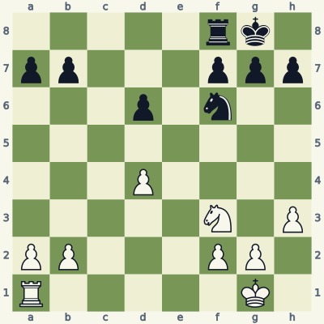
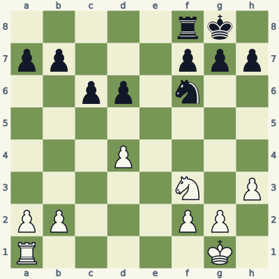
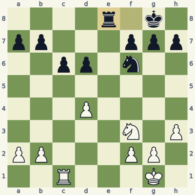
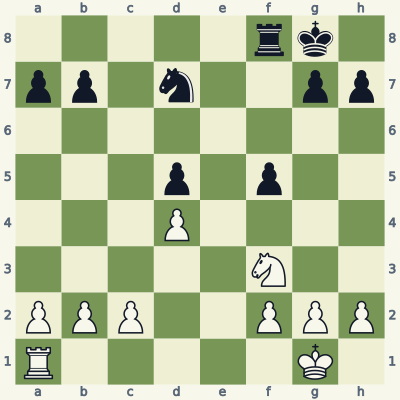
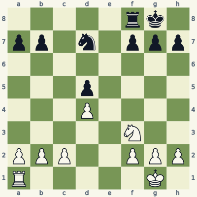
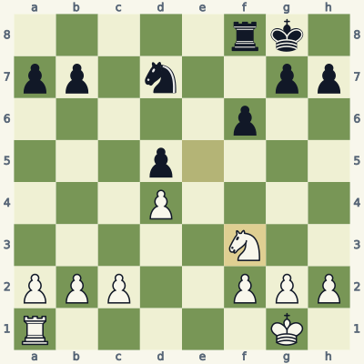
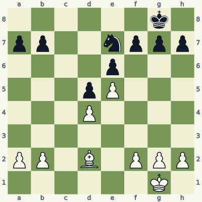
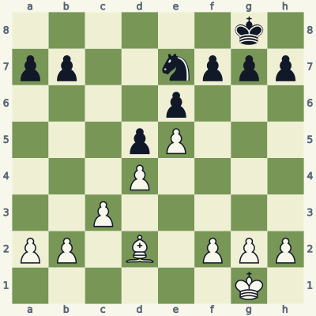
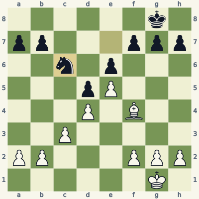

For players who know how the pieces move. Read the model, try the exercise without the answer, then explain the result aloud. Use a board and make the moves one at a time. Spend about 20 minutes per lesson; repeat it tomorrow and a week later.
Check the immediate threat, choose candidates, test the opponent's checks and captures, then inspect the final position. Some questions ask for a safe move or correct diagnosis rather than a unique best move. Sample replies illustrate ideas unless the explanation says they are forced.
Notation and replay help
K king · Q queen · R rook · B bishop · N knight. A pawn move has no piece letter. Nf3 means knight to f3; Rxc6 means rook captures on c6; + means check; # means mate; O-O means kingside castling; e8=Q means promotion. A line beginning 1... starts with Black. Diagrams face the player to move.
The PGN download loads starting positions and sample lines into a chess program. Position codes (FEN) let you recreate individual boards. The PDF and website work without an account.
Lesson 04.1
Put a rook on a file with an entry square
A rook belongs on a useful file, not automatically on whichever file is empty. Look for a target, an entry square, and a safe route to that square.

Model A · White to movePosition code5rk1/pp3ppp/3p1n2/8/3P4/5N1P/PP3PP1/R5K1 w - - 0 1
Read the position
The c-file contains no pawn of either color.
The seventh rank contains targets on a7 and b7.
The c7 entry square is not protected by a black pawn, knight or king.
1. Rc1 Re8 2. Rc7
Rc1 places the rook on the open c-file. If Black continues ...Re8, White can invade with Rc7 and attack along the seventh rank. The sequence illustrates a route; ...Re8 is not forced, and Black could instead contest the c-file.
Before invading, inspect the destination. A rook that reaches the seventh rank but can be captured has accomplished nothing. Here c7 is safe, and the rook can attack pawns from the side. That concrete target explains the file choice.
Exercise B · White to move
Take five minutes. Write your reason and the opponent's reply before opening the answer.

Inspect what changed from the model.Position code5rk1/pp3ppp/2pp1n2/8/3P4/5N1P/PP3PP1/R5K1 w - - 0 1
How does the pawn on c6 change the file?
After Rc1 ...Re8, can White simply play Rc7?
What useful job can the rook still do on c1?
Read the full explanation
The c-file is now semi-open for White: White has no pawn on it, but Black has the c6-pawn. The pawn blocks the rook's route toward the seventh rank.
No. A rook cannot jump over c6 to reach c7. Rxc6 is a different move, and the black b7-pawn can recapture on c6, so the pawn is not free.
The rook can pressure c6 and make Black account for that target. White would need additional pressure or a structural change before winning it. Rc1 is a planning candidate, not a claim that this material-down position is equal.
1. Rc1 Re8

Position after the sample line; the last move is highlighted.
Score your explanation: 1 point for the fact and 1 for its consequence in each answer, out of 6. At 4 or below, replay the model and revisit tomorrow.
Where the idea can fail
An open file is not a permanent entitlement. The opponent can challenge it with a rook, protect the entry square, or create a more urgent threat elsewhere.
Use it in your own games
For each rook in one of your games, name a file, an entry square, and the piece that controls the entry. If you cannot name the entry, look for a target first.
A stable knight square is supported and difficult for enemy pawns to attack. Check pawn direction and future pawn moves before calling a square an outpost.

Model A · White to movePosition code5rk1/pp1n2pp/8/3p1p2/3P4/5N2/PPP2PPP/R5K1 w - - 0 1
Read the position
White's d4-pawn protects e5.
Black's pawns on d5 and f5 have already passed the squares from which they could attack e5.
Black can still contest the knight with a piece; pawn immunity does not mean complete immunity.
1. Ne5 Nf6 2. Rc1
Ne5 places the knight on a supported central square. Black's d5-pawn attacks c4 and e4; the f5-pawn attacks e4 and g4. Neither can move backward to challenge e5 with a pawn.
After the illustrative ...Nf6, Rc1 improves the remaining piece. Black also has ...Nxe5 from d7, when dxe5 recaptures. That exchange changes the pawn structure. A good square improves your choices; it does not prevent your opponent from exchanging pieces.
Exercise B · White to move
Take five minutes. Write your reason and the opponent's reply before opening the answer.

Inspect what changed from the model.Position code5rk1/pp1n1ppp/8/3p4/3P4/5N2/PPP2PPP/R5K1 w - - 0 1
What future pawn move can Black use against a knight on e5?
Test Ne5 and give a retreat after that challenge.
Does this mean Ne5 is illegal or always a blunder?
Read the full explanation
The f-pawn is still on f7, so ...f6 is available. A black pawn on f6 attacks e5. This future possibility changes the square's stability.
Ne5 f6 Nf3 shows the knight being driven away. The route back is legal, but White has spent time going to a square that Black can challenge. This is a comparison line, not a recommendation to repeat the maneuver.
No. A temporary knight move can gain time or provoke a weakening pawn move in a richer position. Here the exercise asks whether e5 is a permanent pawn-proof outpost; it is not. Check the whole position before choosing the move.
1. Ne5 f6 2. Nf3

Position after the sample line; the last move is highlighted.
Score your explanation: 1 point for the fact and 1 for its consequence in each answer, out of 6. At 4 or below, replay the model and revisit tomorrow.
Where the idea can fail
Do not define an outpost by a knight's attractive appearance alone. Check whether an adjacent enemy pawn can advance to a square that attacks it, and whether exchanging the knight helps you.
Use it in your own games
Find a candidate outpost in a game. Draw the enemy pawns' possible future attacks, then identify which friendly pawn or piece would recapture an exchange there.
Improve a restricted bishop by finding a real route outside its pawn chain. A useful destination is only useful if the bishop can legally reach it.

Model A · White to movePosition code6k1/pp2nppp/4p3/3pP3/3P4/8/PP1B1PPP/6K1 w - - 0 1
Read the position
White's pawns on d4 and e5 occupy dark squares and limit the dark-squared bishop's central diagonals.
From d2, the diagonal through c3 and b4 is clear.
A bishop on d6 would attack e7 and c7 and help control Black's position.
1. Bb4 Nc6 2. Bd6
Bb4 takes the bishop outside the pawn chain. After the sample ...Nc6, Bd6 completes the route. This improves the bishop's scope without needing to move the central pawns first.
Black is allowed to react differently, so the route is a plan rather than a forced sequence. Test each step for captures and tactical threats. The purpose of a maneuver is to increase useful control, not merely to move a piece several times.
Exercise B · White to move
Take five minutes. Write your reason and the opponent's reply before opening the answer.

Inspect what changed from the model.Position code6k1/pp2nppp/4p3/3pP3/3P4/2P5/PP1B1PPP/6K1 w - - 0 1
Which square on the Model A route is now occupied?
Is Bb4 legal from d2 in this position?
Suggest another development square and describe its current limitation.
Read the full explanation
White has added a pawn on c3. It stands directly on the bishop's route d2-c3-b4.
No. The bishop cannot jump over its own pawn. The presence of an attractive square on b4 does not create a legal route to it.
Bf4 is legal through e3. It places the bishop outside d2 and controls squares such as g5, although its own e5-pawn still blocks the diagonal toward d6. It is a modest improvement, not a claim that the bishop is suddenly unrestricted.
1. Bf4 Nc6

Position after the sample line; the last move is highlighted.
Score your explanation: 1 point for the fact and 1 for its consequence in each answer, out of 6. At 4 or below, replay the model and revisit tomorrow.
Where the idea can fail
A bishop blocked by its own pawns is not worthless. It may defend those pawns. Improve it only when leaving its defensive job does not lose something more important.
Use it in your own games
Choose your least active bishop from a recent game. Write one destination and every intervening square. Then identify the defensive job you would leave behind.
All six starts and listed moves in this book were checked for legality. Stockfish 19 reviewed candidates at depth 18. Available endings with seven or fewer pieces were checked against the Lichess tablebase, including every move of the demonstrated endgame lines. A strategic sample is not a claim of unique best play.
These original, AI-assisted explanations were written around the positions and revised after checking. The lesson data and validation notes make the examples inspectable. Further reading and practice: